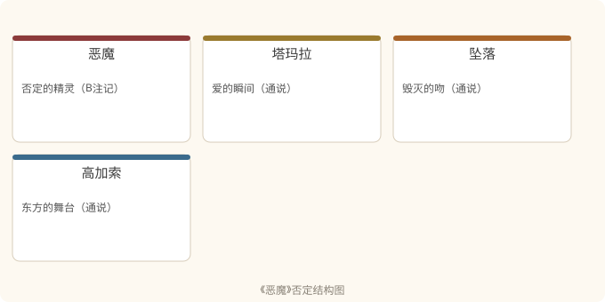

恶魔
一、基本信息
| 作者 | 莱蒙托夫 |
|---|---|
| 成书/出版 | 作者页注记：Britannica 列举 Demon（成稿年份通说待核——生前未全刊） Mikhail Lermontov — Encyclopaedia Britannica（百科全书） |
| 国别/地区 | 俄国 |
| 时代 | 近代 · 19世纪30-40年代 |
| 体裁 | 长诗 |
| 语言 | 俄语 |

《恶魔》否定结构图（主题·结构图）
二、创作背景
作者页注记：恶魔（The Demon）、假面舞会、姆采里——'诗与剧（Britannica 列举）'。
Britannica：莱蒙托夫——《当代英雄》作者（作者页语境）。
题材（通说待核）：天界'恶魔'对格鲁吉亚少女塔玛拉的爱——否定精神的挽歌。
三、内容脉络
（通说待核）恶魔的飞翔与坠落：爱与毁灭。
（通说待核）塔玛拉的祈祷与死亡。
四、主要人物表
| 人物 | 身份 | 说明 |
|---|---|---|
| 恶魔 | 否定之灵 | （B 书名人物） |
| 塔玛拉 | 格鲁吉亚公主 | （通说待核） |
五、主题与艺术特点
- '否定精神'的浪漫主义（通说待核）。
- 拜伦式英雄的俄国变体（通说待核）。
- 高加索的东方想象（通说待核）。
六、影响与评论
- Britannica：Demon 列举（作者页注记）。
Mikhail Lermontov — Encyclopaedia Britannica（百科全书） - Britannica：莱蒙托夫为普希金之后最重要俄国诗人（作者页语境——待核）。
Mikhail Lermontov — Encyclopaedia Britannica（百科全书）
七、阅读建议
难点
- 浪漫主义长诗的语体。
- 圣经'堕落天使'原型。
- 《恶魔》中译本（人民文学等——通说待核）。
- 俄文原版（公有领域）。
莱蒙托夫诗歌首选；与《童僧》《姆采里》并读。
八、待核实
- 成稿年份（1829-1841多稿说）待核。
- 塔玛拉人名核对（通说）。
- 生前刊印状态待核。